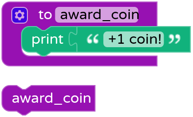

Functions
Give a reusable action a name.
Blockly

GDScript
extends Node
func award_coin():
print("+1 coin!")
func _ready():
award_coin()The Blockly procedure definition becomes func award_coin():. Its body runs when you call award_coin(). Godot calls _ready() when the node is ready.
Try it
Edit and run the example above, or follow the setup instructions to try it in Godot on your computer.
Replace your whole script with the example. Add a second call inside _ready() to simulate collecting two coins. Predict what happens if you remove both calls.
Check your result
Two calls print two messages. With both calls removed, put pass in the empty _ready() body. The function is defined, and the message never prints.